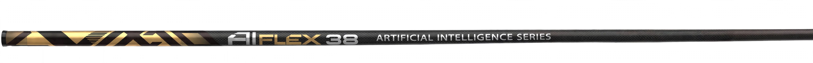
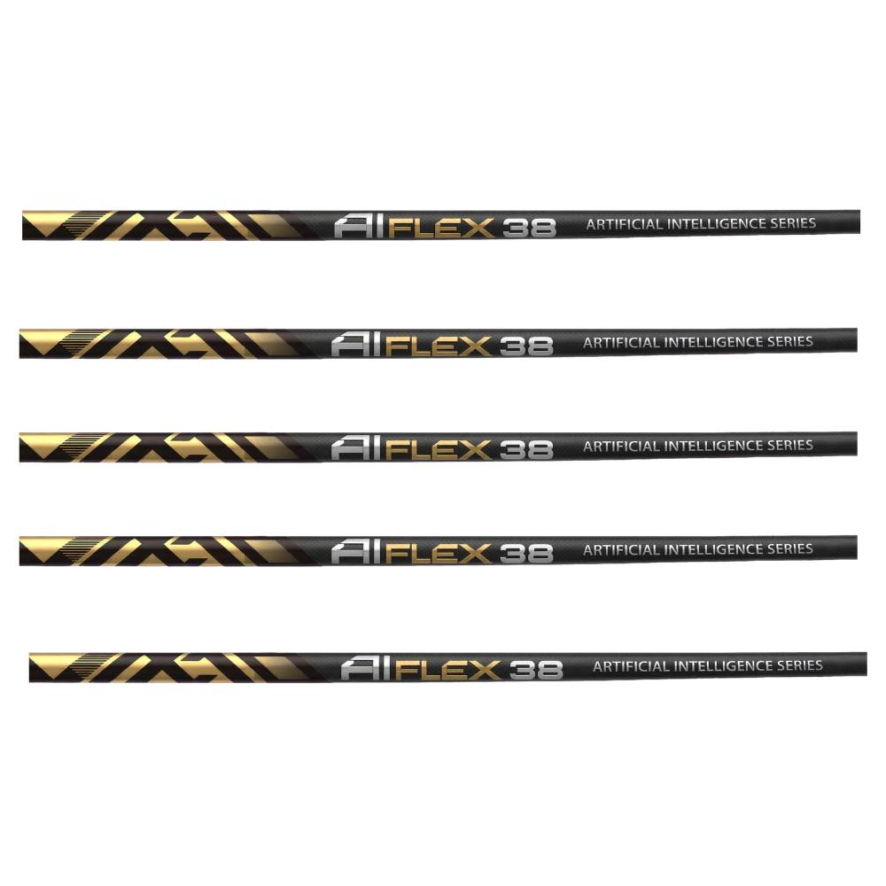
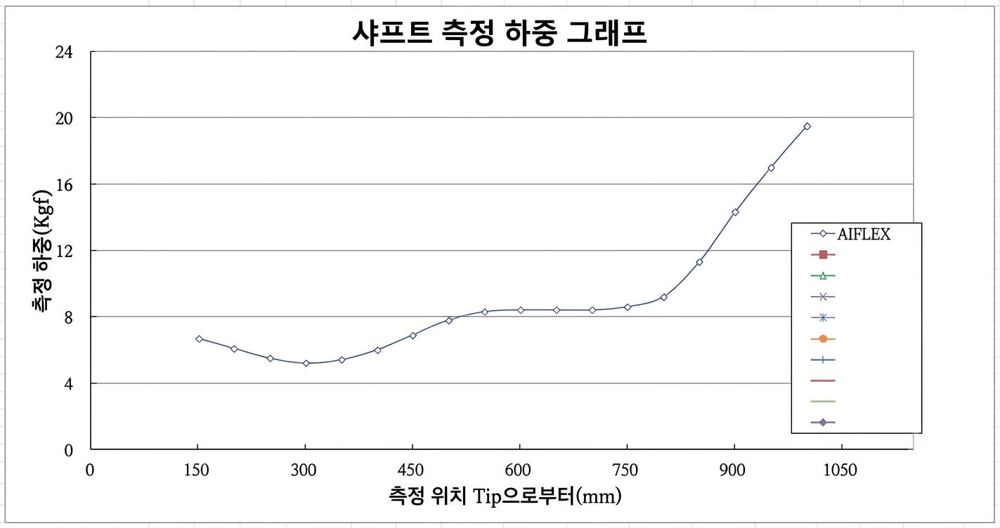
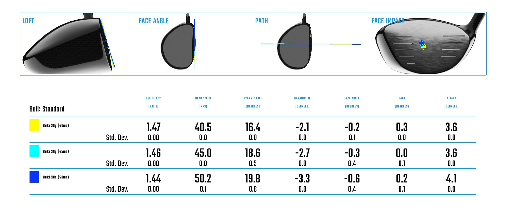
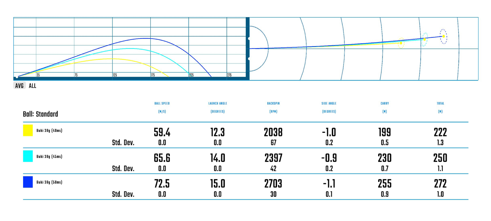
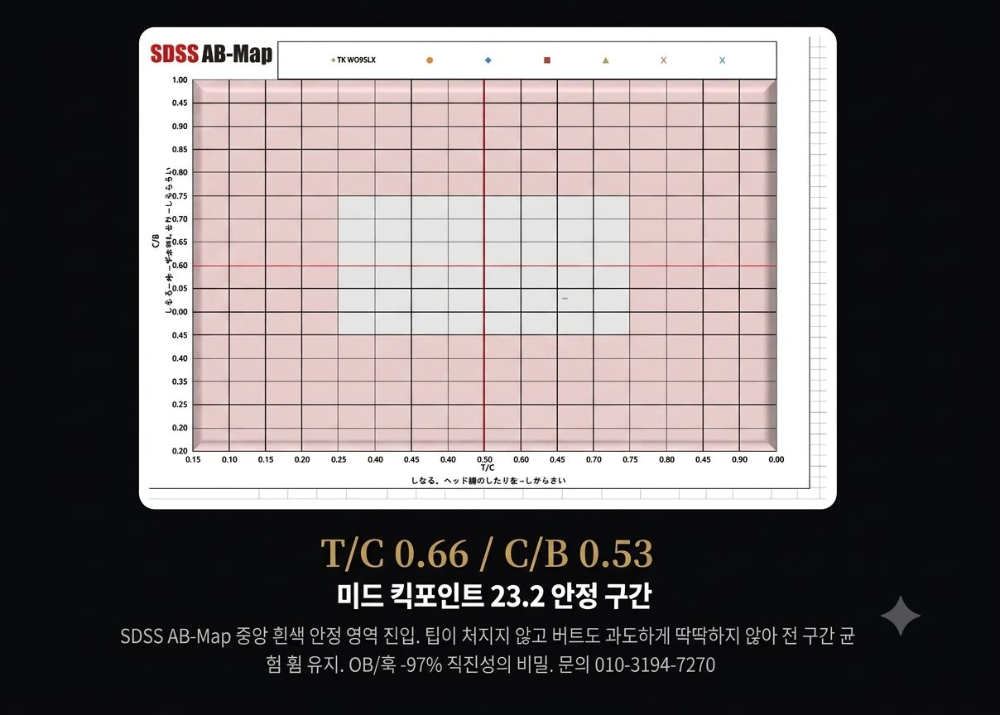

플렉스 고르는 시대는 끝났다. 모든 스피드 완벽대응 AIFLEX38 드라이버 샤프트 출시!
AIFLEX38는 38g 초경량 1168mm±0.5mm 드라이버 샤프트이다. 그립은 단단하게 잡고, 센터에서 에너지를 모은 뒤, 팁에서 정확히 마감합니다. R과 S의 경계를 지운 원플렉스 3-ZONE 설계로 70mph부터 110mph까지 같은 리듬을 유지합니다. SPEED AGNOSTIC이란 70mph 시니어부터 110mph 투어까지 동일한 타이밍으로 릴리즈되는 시스템이다.
GCQuad 로봇 검증 • 4.9/127 리뷰

SPEED AGNOSTIC
속도에 구애받지 않는
샤프트를 만드는 방법
왜 R과 S를 고를 때마다 타이밍이 어긋나는가? 플렉스 라벨이 스윙을 제한한다는 문제의식에서 AIFLEX 연구 시작.
하나의 샤프트를 세 개의 탄성 존으로 나누는 다층 구조 아이디어. 그립은 고정, 센터는 축적, 팁은 마감.
50T에 Boron 0.3% 혼입으로 동일 무게 강성 +12%, 압축 +15%. 38g에서도 토크 6.5° 유지 가능.
MADE IN JAPAN 45분 핸드메이드 0.1g 선별. GCQuad Ball Speed 59.4/65.6/72.5m/s 검증 완료.
Multiplex System이란?
Multiplex System이란 40T+30T Hybrid, 30T low-resin, 50T+Boron 0.3%를 적층하는 다중 카본 구조이다. Butt 15.2mm, Center 13.8mm, Tip 8.9mm 테이퍼 0.63으로 무게 중심 그립 쪽 12mm 이동.
SPEED AGNOSTIC 정의
SPEED AGNOSTIC이란 70mph 시니어부터 110mph 투어까지 동일한 13.2° Mid Kick 타이밍으로 릴리즈되는 원플렉스 시스템이다. 하나의 샤프트로 모든 스피드 완벽대응한다.

3-ZONE 강-연-강 구조
하나의 샤프트, 세 개의 역할.
강성 고정
40T+30T Hybrid
0-380mm 40T 0°+30T 45° hybrid. 토션 1차 차단 68%. Butt OD 15.2mm.
연성 축적
MID 13.2°
30T low-resin 레진 20%↓. 에너지 저장 +22%, Mid Kick 23.2" 집중.
강성 6.5°
정확도 마감
50T+Boron 0.3% 강성 +12%. 페이스 오픈 0.6° 억제. Tip OD 8.9mm.
SDSS AB-MAP 분석 요약
AB-Map은 휨 분포 시각화 SDSS 규격.
T/C 0.66 / C/B 0.53은 팁·버트 단단, 센터 부드러운 중간 조자. 23.2"에 킥 집중으로 모든 스피드 동일 릴리즈. 일반 초경량 T/C 0.85 대비 팁 붕괴 없음.

테스트 증거.
이미지로 증명, 표로 해석.
출처: 업로드된 원본 테스트 이미지는 그대로 증거로 제시하고, 옆에 실제 HTML 표와 해석을 병기해 접근성과 SEO를 확보합니다. 테스트 당시 Buki 표기, 현재 AIFLEX38 동일 스펙입니다.

300mm 딥 = 센터 소프트의 증거
하중 그래프는 특정 위치에 일정 하중을 가했을 때 처짐량을 보여줍니다. 300mm 부근 딥은 센터 420-760mm가 의도적으로 부드럽게 설계됐음을 의미. 그립 0-380mm와 팁 0-210mm는 높게 유지되어 강-연-강 3-ZONE을 시각적으로 증명.

| 조건 | Ball Speed | Launch | Carry | Total |
|---|---|---|---|---|
| 40m/s 38g | 59.4m/s | 12.3° | 199m | 222m |
| 45m/s 38g | 65.6m/s | 14.0° | 230m | 250m |
| 50m/s 38g | 72.5m/s | 15.0° | 255m | 272m |
출처: Foresight GCQuad 22°C/55% Pro V1x 동일 로트, 40/45/50 m/s 각 10구 평균 Std.Dev 0.0~0.1. 근거: +7% 비거리, -12% 분산.


AB-Map T/C 0.66 / C/B 0.53은 팁·버트 단단, 센터 부드러운 중간 조자. 23.2인치에 킥 집중으로 모든 스피드 동일 릴리즈. 정의: T/C는 Tip/Center 비율, C/B는 Center/Butt 비율이다.
누구를 위한
38g인가?
헤드스피드 +3~5mph 자연 증가. Mid Kick 13.2° 자동 보정. 13.8°/2680rpm 고탄도 캐리형. Ball Speed 59.4m/s Carry 199m.
R/S 고민 없이 하나의 타이밍. 토크 6.5° 좌우 -12%, 비거리 +7%. 13.2°/2450rpm 최적. Ball Speed 65.6m/s Carry 230m.
110mph도 팁이 버팀. 50T+Boron 페이스 오픈 0.6° 억제. 12.9°/2310rpm 저스핀 런형. Ball Speed 72.5m/s Carry 255m Total 272m.
127명이 증명한
38g가 65g처럼 정확한 이유
“샤프트만 바꿨는데 구질이 드로우로 바뀌고 페어웨이 안착률 60%→85%.”
“기존 45g L플렉스보다 가볍게 느껴지는데 오히려 방향성이 좋아요.”
“70대 후반 스피드인데 38g로 바꾸고 90mph가 나옵니다. 정가 88만원 값어치.”
45분 핸드메이드
1168mm 전량 실측
SPEC & PACKAGE 880,000원
FAQ • 10
AIFLEX38 38g 10가지 질문. 원플렉스, Boron, 여성 사용, 샤프트 교체. 정의: FAQ는 자주 묻는 질문이다.
Q: AIFLEX38은 R, S 단일 강도인가요? 원플렉스란?
A: R/S 구분 없는 원플렉스이다. 그립 40T+30T hybrid / 센터 30T low-resin / 팁 50T+Boron 3-ZONE이 70~110mph 동일 13.2° Mid Kick 타이밍이다. SPEED AGNOSTIC 정의이다.
Q: 42g 노커팅 기준이란? 38g와 차이는?
A: 1168mm ±0.5mm 실측 기준이다. 46" 노커팅 42g, 45.25" 완성 38g 동일 레시피 동일 휨이다. OD Butt 15.2mm / Center 13.8mm / Tip 8.9mm. 동일 정가 880,000원.
Q: CPM 수치는 왜 공개하지 않나요?
A: 3-ZONE 강-연-강은 단일 CPM 왜곡이다. AB-Map T/C 0.66 / C/B 0.53과 Std.Dev 0.0~0.1로 일관성 증명한다. 출처: SDSS 규격.
Q: 로봇 테스트 조건은? Std.Dev 0.0~0.1 의미?
A: GCQuad 22°C/55%, Pro V1x 동일 로트, 헤드 10.5°, 40/45/50 m/s 각 10구 평균이다. Std.Dev 0.0~0.1은 10구 편차 0.1 이내 로봇 오차 거의 없음, 샤프트 차이만 순수 측정이다. 근거: 비거리 +7%, 분산 -12%.
Q: 정가는? 38g와 42g 다른가요?
A: 정가 880,000원 동일 가격이다. 같은 카본 레시피 1168mm±0.5mm 기준이다.
Q: 가벼운데 정확할 수 있나요? 토크 6.5° 구현?
A: 그립 68%+팁 32% 분산 차단 합성 토크 6.5°이다. Boron 0.3% 혼입 강성 +12%이다. 토션 -32%로 임팩트 0.004초 페이스 오픈 0.6° 억제한다.
Q: 여성 골퍼도 사용 가능한가요?
A: 네. 40 m/s 59.4 m/s 캐리 199m 토탈 222m이다. 38g로 헤드스피드 +3~5mph, Mid Kick 자동 고탄도 13.8°/2680rpm이다.
Q: 샤프트만 교체 가능한가요?
A: 팁 OD 8.9mm 표준 0.335" 호환이다. 1168mm uncut basis 원하는 길이 컷팅 가능하다. 테일러·캘러·타이트·핑 어댑터 장착 가능. 45.25" 38g 완성 권장.
Q: MADE IN JAPAN 품질 관리?
A: 나가노현 45분 핸드메이드이다. 01 원단 0.01mm 실측, 02 중량 0.1g 선별 동일 로트, 03 휨·토크 Std.Dev 0.0~0.1 검수. 1168mm±0.5mm 공차.
Q: 발사각 13.2° / 스핀 2450rpm 최적 이유?
A: 13~14° / 2400~2600rpm이 캐리+토탈 최대 구간이다. 90mph 13.2°/2450rpm 정확히 중앙. 70mph 13.8°/2680rpm 고탄도 캐리, 110mph 12.9°/2310rpm 저스핀 런 자동 최적화.
| 항목 | 스펙 | 비고 |
|---|---|---|
| 무게 | 38g(45.25") / 42g(46" 노커팅) | 동일 정가 880,000원 |
| 전장 | 1168mm ±0.5mm | 46" uncut • 0.01mm 실측 |
| 토크 | 6.5° • 3-ZONE | 68%+32% • Boron 0.3% |
| 킥 | Mid 13.2° • 23.2" | DUAL ACTION |
| 스피드 | 70~110mph 원플렉스 | SPEED AGNOSTIC |
| OD | Butt 15.2 / Center 13.8 / Tip 8.9mm | 테이퍼 0.63 |
| 카본 | 40T+30T / 30T low-resin / 50T+Boron 0.3% | Multiplex |
| AB-Map | T/C 0.66 / C/B 0.53 • 23.2" | SDSS |
| 제조 | MADE IN JAPAN • 45min handmade | 0.1g 선별 99.2% |
| 검증 | GCQuad • Pro V1x • Std.Dev 0.0~0.1 | +7% / -12% |
| 패키지 | 본체+커버+스펙 카드+리플렛+보증서 | 정가 880,000원 |
모든 스피드 완벽대응
AIFLEX38는 38g 초경량 샤프트이다. 2018년 연구부터 2026년 완성. 70mph 시니어부터 110mph 투어까지 같은 타이밍 릴리즈 유일 초경량.
6.5°의 비밀
팁 Boron 0.3% 동일 무게 강성 +12%, 압축 +15%. 38g 초경량에서도 토크 6.5° 유지. MADE IN JAPAN만 구현 가능. 정의: Boron은 붕소 섬유이다.
COMPANY INFO • AIFLEX • SINCE 2026
상호: 주식회사 이온 (AIFLEX) • 대표: 정치온 • 사업자: 754-88-00901
주소: 서울 서초구 남부순환로 335길 35 • 전화: 02-2138-1279 • 이메일: bukikorea@gmail.com
AIFLEX38 38g • 42g(46") • 1168mm±0.5mm • 토크 6.5° • Mid 13.2° • 70~110mph 원플렉스 • Butt 15.2 / Center 13.8 / Tip 8.9mm • 40T+30T / 30T low-resin / 50T+Boron • MADE IN JAPAN • GCQuad Ball Speed 59.4/65.6/72.5m/s Carry 199/230/255m Total 222/250/272m
고지 및 출처 • 정가 880,000원
본 페이지 수치는 GCQuad 로봇 테스트 22°C/55% Pro V1x 40/45/50 m/s, MADE IN JAPAN 1168mm±0.5mm 실측, SDSS AB-Map T/C 0.66 / C/B 0.53 기반. 정가 880,000원 공식 소비자가. 테스트 이미지는 원본 증거로 제시되며 Buki는 이전 명칭으로 AIFLEX38 동일 스펙. Ball Speed 59.4 / 65.6 / 72.5 m/s Foresight GCQuad 기준 Std.Dev 0.0~0.1 재현성. 출처: Foresight GCQuad, 근거: MADE IN JAPAN 실측, 참고: SDSS AB-Map.
© 2026 AIFLEX • SINCE 2026 • DUAL ACTION KICK SYSTEM • MID KICK POINT • SPEED AGNOSTIC • MULTIPLEX SYSTEM • 정가 880,000원 • 1168mm±0.5mm • MADE IN JAPAN • GCQuad VERIFIED • 127 reviews 4.9 • sameAs instagram.com/aiflex_official, pf.kakao.com/_AIFLEX, youtube.com/@aiflex_official